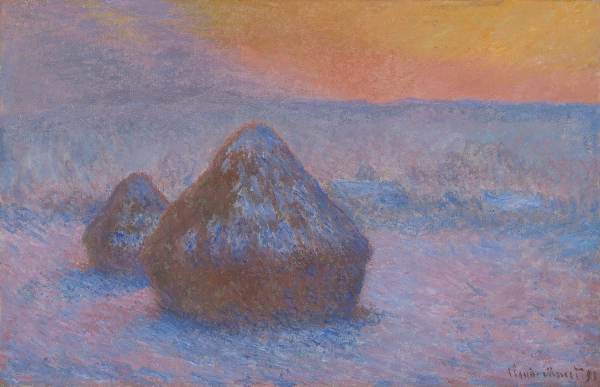

干草堆（日落，雪景） Stacks of Wheat (Sunset, Snow Effect)
莫奈 · 1890–91年 · 芝加哥艺术博物馆
Claude Monet · 1890–91 · Art Institute of Chicago
图片：芝加哥艺术博物馆开放资源（CC0），公有领域 / Image: Art Institute of Chicago, CC0 public domain

草堆的尖顶冲破了地平线，伸进日落的天空。 The tip of the stack breaks the horizon and pushes into the sunset sky.
发现 · Discover
比人高得多 Far taller than a person
这些草堆高约4.5到6米，就在莫奈吉维尼农舍的外面。
The stacks rose 15 to 20 feet (about 4.5 to 6 metres), just outside Monet's farmhouse at Giverny.
冲破地平线 Breaking the horizon
这一幅里，草堆的尖顶冲破了地平线，伸进天空。冬天的大多数几幅，草堆却像被山丘和田野一层层裹住。
In this view the conical tops break the horizon and push into the sky. In most of the winter views, the stacks seem wrapped by bands of hill and field.
几个画架同时画 Several easels at once
1890到1891年，他在田野里同时用几个画架作画，再回到画室调整整个系列的色彩。
Through 1890 and 1891 he painted in the field at several easels at once, then refined the harmonies of the series in his studio.
食物和生存 Sustenance and survival
芝加哥艺术博物馆说，对莫奈来说，草堆象征着食物和生存。
The Art Institute of Chicago says that for Monet, the stack was a symbol of sustenance and survival.
一个小房间，15幅 Fifteen in one small room
1891年5月，莫奈把15幅草堆并排挂在巴黎杜兰-鲁埃画廊的一个小房间里。展览大获成功。
In May 1891, Monet hung fifteen of the canvases side by side in one small room at the Galerie Durand-Ruel in Paris. The show was a great success.
芝加哥的草堆 Chicago's stacks
这一幅来自波特·帕尔默的收藏。芝加哥艺术博物馆收藏的莫奈草堆，是世界上最多的。
This painting comes from the Potter Palmer Collection. The Art Institute of Chicago has the largest group of Monet's stacks in the world.
故事 · The story
ACT I 第一幕 · 农舍外的田野 The field outside his house
1890年夏末，莫奈开始画吉维尼农舍外田野里的草堆。草堆高约4.5到6米，他一画就是一个系列。
At the end of summer 1890, Monet began painting the stacks in the field outside his farmhouse at Giverny. They stood 15 to 20 feet tall, and he painted them as a series.
1890–91年 · 芝加哥艺术博物馆 / 1890–91 · Art Institute of Chicago
ACT II 第二幕 · 雪后的日落 Sunset after snow
冬天，田野盖上了雪。他常常在田野里同时用几个画架作画，再回到画室，调整整个系列的色彩。
In winter the field was covered with snow. He often worked at several easels at once in the field, then returned to the studio to refine the colours of the whole series.
ACT III 第三幕 · 排成一排 Side by side
1891年5月，15幅草堆在巴黎的一个小房间里并排展出，这次展览大获成功。今天，芝加哥艺术博物馆收藏的莫奈草堆是世界上最多的。
In May 1891, fifteen of the stacks were shown side by side in a small room in Paris, and the exhibition was a great success. Today the Art Institute of Chicago has the largest group of Monet's stacks in the world.
1890–91年 · 芝加哥艺术博物馆 / 1890–91 · Art Institute of Chicago
同一个主题，冬天的光。 The same subject, in winter light.
作品档案 · Artwork record
| 画家（生卒年） · Artist (dates) | 克劳德·莫奈（1840–1926） / Claude Monet (1840–1926) |
|---|---|
| 画名 · Title | 干草堆（日落，雪景） / Stacks of Wheat (Sunset, Snow Effect) |
| 年份 · Date | 1890–91年 / 1890–91 |
| 材质 · Medium | 布面油画 / Oil on canvas |
| 尺寸 · Dimensions | 65.3 × 100.4 cm |
| 收藏地 · Collection | 芝加哥艺术博物馆 / Art Institute of Chicago |
| 来源说明 · Credit line | 波特·帕尔默收藏（1922.431） / Potter Palmer Collection (1922.431) |
关于画家 · About the artist
克劳德·莫奈（1840–1926），法国印象派最重要的风景画家。他生于巴黎，在勒阿弗尔长大。普法战争期间（1870–71）曾移居伦敦。1883年起住在吉维尼，晚年专注于在不同光线下反复画同一主题，比如干草堆、鲁昂大教堂和他自己的花园。
Claude Monet (1840–1926) was the leading French Impressionist landscape painter. Born in Paris, he grew up in Le Havre and moved to London during the Franco-Prussian War (1870–71). From 1883 he lived in Giverny, where he painted series of a single subject under different light: haystacks, Rouen Cathedral and his own garden.